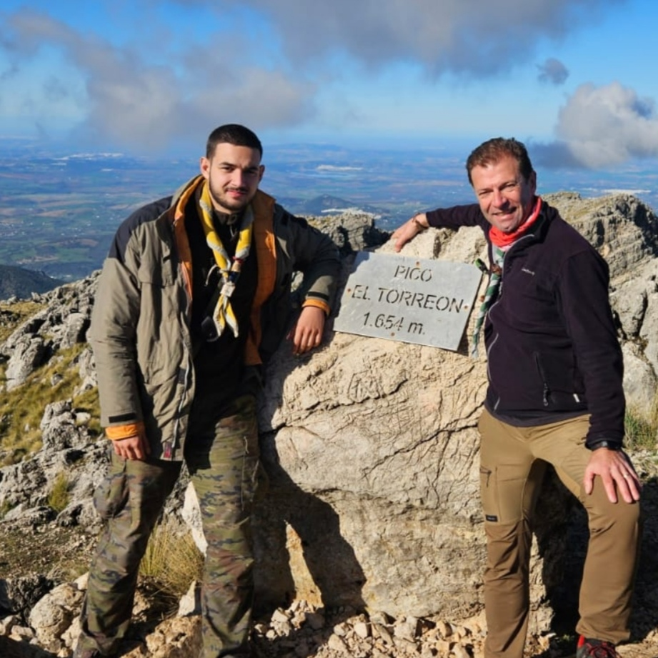

LMSGI
LMSGIAlpinismo
El alpinismo y la montaña son de mis aficiones favoritas, ademas me gusta siempre el llegar mas alto y decidir ir a los sitios mas altos pese a el esfuerzo.
Algunos de mis picos que he subido desde Marzo del 2023, donde recobre mi pasion por las montañas
- La Maroma (II subida), Marzo 2023
- El Torreon, Enero 2024
- Simancon, Febrero 2024
- Terril, Abril 2024
- Torrecillas, Junio 2024
- Pico Reloj, Septiembre 2024
- Torrecillas (II), Diciembre 2024
- La Maroma (III subida), Enero 2025
|
Ascenso a "La Maroma" |
Ascenso a "La Maroma" |

Ascenso a "El Torreon" |